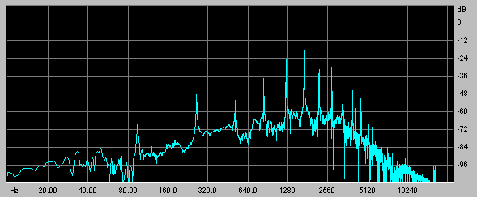

|
|
PREVIOUS: SOUNDFILES NEXT: PITCHMany of CDP's most distinctive processes take place in the Frequency Domain - that is, they process the changing frequency spectrum, operating on frequency analysis files (.ana), which are converted from/to soundfiles via PVOC (see SPEC UTILS below).
In the frequency domain, you can do a lot more than manipulate frequencies. Each time-slice has a loudness contour across the frequency spectrum (rather like a graphic equaliser setting):
This is known as the spectral envelope and it normally changes throughout the sound. Many spectral processes transform the spectral envelope or other aspects of amplitude. Sounds can also be successfully morphed from one to another, or you can make hybrids by imposing the characteristics of one sound onto another. A key parameter is usually the number of analysis channels (frequency bands) selected from the total present in the frequency analysis.
On the frequency side, pitch can be changed without changing time and several processes allow the material to be radically re-tuned to the user's own pitch template, or one taken from a different sound.
Other processes manipulate how the spectrum changes across time, e.g. by blurring, freezing or time-stretching the sound. A key parameter is usually the number of analysis (time-)windows.
SPECTRAL-PROCESSING CATEGORIES:
These categories are not mutually exclusive, as will be seen. The CDP programs such as HILITE, FOCUS and BLUR offer equally valid ways of looking at the spectral suite, but many related functions are in different programs (e.g. Hilite Trace vs Blur Suppress).
RESHAPE SPECTRAL ENVELOPE & PEAKS (CDP groups: HILITE, FOCUS, BLUR, STRANGE)
These processes reshape the spectral envelope and/or emphasise spectral peaks or other frequencies.
- Accumulate sustains the frequencies in each band, optionally applying glissando to the sustained partials.
- Superaccu is a more recent version, in which you can also tune the resonances.
- Arpeggiate focusses on a band of frequencies which is swept up and down through the spectrum. This parallels Filter Sweeping in the time-domain, which can often pick out individual frequencies more effectively. If the sweep-speed is too fast, consider time-stretching the result.
- Average roughens the sound by averaging the spectral amplitude over adjacent frequency channels. This broadens, or defocuses, spectral peaks.
- Exaggerate narrows the spectral peaks to focus the energy around formant frequencies (see also FORMANTS, below). Alternatively, the process may be used to broaden the spectral contour.
- Pluck aims to highlight spectral changes, such as those associated with Arpeggiate, and emphasize them. It is not very effective, however.
- Glisten plays a randomly chosen set of spectral channels, then switches to another random set. The varying spectral dropout gives a "glistening" or bubbling effect, the rate being determined by the window-count. (Compare with Scatter and Step-Freeze). The output normally needs to be normalised.
- Invert reverses the spectral envelope from top frequencies to bottom (but not the frequencies themselves), so that the energy associated with high sounds is applied to low ones and vice-versa; this also tends to create a noisier spectrum.
- Noise adds noise to the spectrum by progressively making the data in every channel, most of which is actually low-level noise, equally loud.
- Spread introduces noise into the spectrum by spreading the spectral peaks, exaggerating the less prominent (noise) constituents. The effect is similar to AVERAGE and can be time-varied.
- Caltrain (R8) distorts the spectrum by blurring above a given frequency and over a specified amount of the sound. The effect is a kind of added rattle, like listening on the other sound of a snare drum (with the snare on). The "ordinary" signal below the frequency cut-off is muffled, but the result can be improved by mixing it with the source.
FILTER (CDP groups: HILITE, FOCUS, SPECNU, BLUR)
These processes remove or reduce the amplitude in selected frequency channels, or use frequency information to partition the spectrum.
- Filter implements classic filter types in the frequency domain, with the possibility of very precise and very sharp filtering.
- Greq: a text-specified Graphic-EQ filterbank with great flexibility in the number and definition of bands.
- Focus focuses the energy around the most prominent spectral peaks, by treating these as the centre frequencies of a filter set.
- Vowels mimics the filter characteristics of spoken vowels (c.f. Repitch Vowels).
- Slice partitions the spectrum into slices selected by user-defined bands, output as separate files. Thee can be then treated individually (e.g. distributed spatially, transposed, delayed or repetition) before being mixed or interleaved to reconstruct a single sound. One application is to create a false stereo out of a mono signal; another might be to create a chorus effect. Although it operates differently, this process effectively supersedes the early function Hilite Band. Note also that Specnu Slice 1 is identical to the separate function Specgrids.
- Clean reduces noise in a signal by eliminating low-level bands quieter than those in a comparative 'noise file'. (Clean supersedes an older function: Spec Clean.)
- Subtract similarly compares two files and subtracts the amplitude in one (which may not actually be 'noise'), from the other. (In Soundshaper, this is Mode 2 of Clean.)
- Remove subtracts a given pitch and its harmonics, or removes everything but these same frequencies (c.f. Pick)
- Trace thins the spectrum by retaining the strongest partials.
- Bltr (Blur and Trace) is a variant of Trace offering time-averaged blurring as well (see also Blur.
- Suppress is the opposite of Trace, thinning by rejecting the strongest partials.
- Suppress Partials (R8) is a newer variant of Suppress, allowing you to set the frequency band in which partials are suppressed.
- Scatter thins the spectrum randomly, retaining N random frequency blocks per analysis window. This usually produces a gurgling effect (c.f. Glisten).
PITCH & FREQUENCY (CDP groups: REPITCH, PITCH, SPECFNU, BLUR, STRANGE)
These processes directly manipulate the frequency data in spectral analysis files and some have a radical effect on the pitch or harmonic content.
PITCH-ALTERING FUNCTIONS
Transposition preserving time can be done in several ways, either shifting the formants or attempting to preserve them (especially for vocal sounds).
Transpose without preserving formants:
- Transpose transposes the sound, preserving time, but not the spectral envelope (formants).
Other ways of doing this may work better than Transpose in certain contexts:- Transp transposes all or part of the spectrum, up or down or both.
- Time-stretch plus Speed: a composite batch file of time-stretching (or shrinking) and the time-domain Speed (which changes pitch and time) is worth considering (and has been implemented in Soundshaper).
Transpose preserving the spectral envelope (formants):
- Pchshift transposes by fixed number of semitones. It requires a pitch file (.frq) as input, extracted using Repitch GetPitch.
- Octmove: transposes the sound by a ratio, with an optional bass boost.
Both Pchshift and Octmove require an extracted formant (spectral-envelope) file (.for) to reconstitute an analysis file, using Make.
To preserve the original formants, this should come from the same source sound. The pitch and formant extraction, shifting and reconstruction can be implemented as a composite process, using a batch file (details below).- Specfnu 11 (Octave-shift, R8) and 12 (Transpose, R8) also transpose, preserving formants, with options to silence non-harmonic or unpitched partials, arpeggiate, etc.
- TransposeF is an early variant of Transpose, intended to preserve formants, but it is less effective than the later methods above.
Other pitch-altering functions preserving formants:
In addition to PchShift and Octmove, the following pitch-data functions can be turned into composites (as done in Soundshaper), using a batch file consisting of:
- Extract pitch using GetPitch
- Extract formants (spectral envelope) using Formants Get
- Apply the pitch-data function to the extracted pitch
- Combine the altered pitch with the formant file using Make
- Approx produces a pitch contour varying slightly (or, optionally, radically) in pitch and time from the original.
- Exag exaggerates the range and/or contour of the extracted pitch.
- Invert inverts the pitch contour around a given pitch, either using mirror inversion, or a mapping text file of intervals and their inversions.
- Quantise constrains pitches to a given template. For example, quantising to the semitone eliminates microtonal shifts (c.f. autotuning programs).
- Randomise randomises the pitch contour within user limits.
- Smooth averages the pitch across the specified time-window, around a mean pitch.
- Vibrato modulates pitch, preserving time (necessary if several pitches vibrato simultaneusly).
Specfnu and Fractal
- Specfnu (R8) has alternative methods for some of the above operations, again with the emphasis on preserving formants:
Pch-Exagg (specfnu 16), Pch-Invert (specfnu 15), Pch-Quant (specfnu 17), Pch-Rand (specfnu 18) – see also under FORMANTS.
- Fractal Spectrum (R8) distorts the spectrum fractally by transposition. The musical effect is a kind of pitch wobble.
FREQUENCY-ALTERING FUNCTIONS
- Tune/Tunevary tunes a sound to a given set of pitches, by shifting individual partials to the nearest harmonic of the specified chord. The degree of the effect can be time-varied. Note that the tuning can only be effective to the extent that the partials are actually present in the source; using or mixing in an octave-transposed version can be helpful. TuneVary adds a time-variable pitch template, using the Varibank format and inviting comparison with Varibank itself.
- Pick retains a set of partials (harmonics, octaves, or shifted harmonics) if these are present in the sound. (If not, the sound could be transposed first.)
- Fold octave-transposes spectral components into the specified range.
- Specfold 1 (R8) is a newer function which similarly (and more convincingly) folds spectral frequencies: in a given number of channels above a specified low one.
- Specnu Slice 5 (Invert spectrum) inverts all partials around a given frequency: high becomes low and vice versa.
- Specfold 2 (Invert spectrum) (R8) similarly inverts a given number of channels above a specified low one.
- Specfold 3 (R8) randomises spectral frequencies in a given number of channels above a specified low one.
- Shift frequency-shifts all or part of the spectrum up or down, by adding a value to all frequencies in a specified band, producing inharmonic sounds.
- Freq-Shift (Specfnu 13, R8) also shifts the spectrum, under the existing formants. This tends to introduce artefacts not found in Shift.
- Respace (Specfnu 14, R8)> re-spaces partials, under the existing formants, using a textfile of new spacings.
- Randomise partials (Specfnu 19, R8) randomly shifts the partials, under the existing formants.
- Stretch spectrum stretches or compresses frequencies above or below a dividing frequency, turning harmonic sounds into inharmonic ones.
- Waver is a kind of spectral vibrato, oscillating from the original (harmonic) state to a stretched (inharmonic) state and back.
- Chorus randomises frequencies and/or amplitudes to create a chorus effect, or a more extreme gurgling effect.
- Glis attempts to reproduce Shephard tones or an inharmonic glissando. The Shephard illusion is the equivalent of Escher's perpetual staircase drawing – in the descending audio version, as new upper harmonics gradually appear, lower ones fade out, so that the effect is of an ever-descending tone. In this version, a good effect is hard to achieve, but the process is useful in its own right.
OTHER FUNCTIONS
- Chord/Chordf imposes transposed versions of the sound onto the original frequencies. In theory, this should sound like a transposer, but somehow it doesn't, probably because it's working with frequency sets, not actual transpositions (as does Stack in the time-domain). Chordf additionally attempts to preserve the original formants.
To create an effective chord, mix multiple transpositions of the original sound (using Transpose and Mergemany).
- Squeeze aims to squeeze frequencies around a given centre frequency. The function is either misleading or faulty, as it invariably squeezes around an F4 pitch, but varying the supposed frequency does alter the timbre, so perhaps it has some use.
More convincing is Specfnu 2 (R8) (Squeeze) (q.v. under FORMANTS)
- Spectune (R8): the name is misleading, as the function doesn't tune the spectrum, like Tune/Tunevary, but aims to find the most prominent pitch and transpose the file to it. Unfortunately there are often unwanted artefacts and breakthrough of the original pitch.
MORPH (CDP group: MORPH)
Morphing processes interpolate ("morph") between two sets of spectra over time.
- Morph and Bridge morph over time between the frequency and amplitude values of two sounds.
- Newmorph (Soundshaper: MorphPeaks) morphs between the spectral peaks of two sounds. This makes it possible to morph between dissimilar sounds. In its tuned modes, Sound 1 is gradually tuned to the average pitch field of Sound 2. You can also create multiple output files, representing different stages of the morph.
- Newmorph2 (Soundshaper: Morphtune) gradually tunes the sound to the pitches in a given list.
Newmorph2 Mode 1 (Soundshaper: Peakfreqs) extracts the peak frequencies from a given analysis file, in order of prominence, to provide a pitch template for Newmorph2. It reports the frequencies only, not their amplitude.
- Specross Partials (Soundshaper: MorphHmcs) morphs the harmonics of an articulated pitched sound 1 (e.g. speech) towards those of a sustained pitched sound 2. Spectral peaks are tracked in each source and those of sound 1 are transformed to match those of sound 2. The result may seem more like an altered sound 2 than sound 1.
- Glide makes a gradual glissando, over any time, between the frequencies of two single-moment spectra, grabbed at two specific times from different sounds (although they can be the same if the copy is named differently). (In Soundshaper, the Grab and Glide procedure is built into a composite process behind the scenes.)
The only drawback with Glide is that it has no changing envelope, spectral or otherwise, but one can be imposed.
FORMANTS (CDP groups: FORMANTS, ONEFORM, COMBINE, SPECFNU)
Formants are the resonant frequencies found in many sounds, especially vocal ones. These frequencies are emphasised whatever pitch is used (sung or spoken). If the pitch is changed (even while preserving time), the formants also move and the voice sounds un-natural. Several processes (esp. Specfnu) therefore attempt to manipulate sound while retaining the formants. Others create hybrids by crossing the spectral contour of one sound with another.
CDP also employs formant files (.for), which extract the time-varying spectral envelope of a sound, mainly for use with other processes. In the PITCH suite, extracted pitch files (.frq) are transformed and later combined with a suitable formant file to create a frequency analysis file (.ana), which the Phase Vocoder can then convert back to a soundfile (.wav).
EXTRACTING AND USING FORMANTS (Spectral Envelope)
- Formants Get extracts the time-varying spectral envelope from a frequency analysis file (.ana) to a formant file (.for). (Soundshaper accepts a sound or analysis file as input.)
- Oneform Get extracts a single spectral envelope at a specified time in a formant file. (Soundshaper accepts a sound, analysis or formant file as input.)
Apart from Formants Put and Oneform Put (see below), formant files are normally combined with pitch files (see PITCH-DATA section):- Make combines a formant (spectral envelope) file (.for) with a pitch data file (.frq) to make a spectral file (.ana). Both files must have been derived from the same PVOC settings, but they can come from different source sounds, which offers many possibilities for creating hybrids.
Pitch-data functions alter extracted pitch (.frq) in a number of ways; in addition, pitch-breakpoint files (.pch/.brk)can be manipulated manually and then converted to binary pitch files (.frq), or pitch files can be synthesized by Repitch Generate. By creating a spectral file (.ana), Make provides a route back to sound.
- Make2 is a variant of Make, generating a spectrum from pitch, formant and also envelope data (.evl), possibly from different sounds.
In both Make and Make2, some care is needed to ensure that the formant file (.for) has a wide enough spread of partials for the content of the pitch (.frq) file.- Oneform Combine is a version of Make for a single-formant file (.for). It combines pitch and single-moment-formants data to make a new spectral file.
- Formants See/GetSee is a utility for viewing a formant file as a pseudo-soundfile, which should NOT be played.
FUNCTIONS CREATING HYBRIDS
- Vocode: the spectral version of a classic technique, this creates a hybrid between two sounds by imposing the spectral amplitude of one sound on top of another.
- Cross creates a hybrid by replacing the spectral amplitude of one sound with that of another (more radical than vocoding).
- Specenv (R8): like Vocode, Specenv extracts the spectral envelope of File2 and applies it to File1, but allows for larger spectral windows.
File2 must be longer than File1 – an annoying restriction; otherwise this gives a good result.
- Specsphinx (Soundshaper: Hybrids) is a variant of Cross which imposes the amplitudes of Sound 2 on the frequencies of Sound 1, or multiplies their spectra.
- Spectwin combines the formant and/or total spectral envelopes of two spectra.
- Formants Put imposes or replaces the spectral amplitude, using an extracted formant file (.for) – the equivalent of Vocode and Cross.
- Oneform Put imposes or replaces the spectral amplitude, using a single-moment formant file (.for). This creates a static sound with frozen amplitudes, but with a changing spectrum/pitch (see also Freeze).
SPECFNU (R8)
Specfnu (R8) is a comprehensive set of functions altering the formants themselves or altering the spectrum under the existing formants.
Specfnu functions altering formants:
- Narrow Fmts (specfnu 1) steepens the skirts of formant peaks, with an option to omit some.
- Squeeze Fmts (specfnu 2) squeezes the spectrum around a given formant (1-4).
- Invert Fmts (specfnu 3): formant peaks become troughs and troughs peaks, generally roughening the sound.
- Rotate Fmts (specfnu 4): formant peaks and frequencies rotate around the spectrum at a given speed.
- Spectral Negative(specfnu 5) inverts the spectral values for each channel, usually producing a highly distorted output.
- Suppress Fmts (specfnu 6) suppresses one or more of formants 1-4, changing the timbre.
- Move Fmts (specfnu 8/9) moves each of formants 1-4 by or to a specified frequency. (Small values have little noticeable effect.)
- Arpeggiate Fmts (specfnu 10) arpeggiates the spectrum, under formants, creating a sweeping-filter effect.
Specfnu functions preserving formants:
Functions altering pitch or frequency while preserving formants have already been mentioned in the PITCH/FREQ section, but are re-listed here for completeness.
- Octave-shift (specfnu 11) and Transpose (specfnu 12) both transpose preserving formants, with options to silence non-harmonic or unpitched partials, arpeggiate, etc. (c.f. Octmove, PchShift)
- Freq-Shift (Specfnu 13) shifts the spectrum, under the existing formants (c.f. Shift).
- Respace (Specfnu 14) re-spaces partials, under the existing formants, using a textfile of new spacings.
- Pch-Invert (Specfnu 15) inverts the pitch, under existing formants (c.f. Repitch Invert)
- Pch-Exagg/Smooth (Specfnu 16): exaggerate or smooth the pitch-line, retaining formants (c.f. Repitch Exag).
- Pch-Quant (Specfnu 17) forces pitch onto a specified pitch field, retaining formants (c.f. Repitch Quantise).
- Pch-Rand (Specfnu 18) randomises pitch of source, under existing formants (c.f. Repitch Randomise).
- Randomise partials(Specfnu 19) randomly shifts partials, under the existing formants.
- Sine-speech (Specfnu 23) converts each formant frequency into a sine tone: a kind of pseudo-synthesis based on the source formants.
- Filter (Specfnu 7) generates filter data for Varibank, based on formant peaks. The relative amplitude of formants can then be varied by filtering, or the sound could move towards a second set of filter data, derived from altered formants.
- See Spectral Envelope (Specfnu 20) produces a viewable (but not playable) pseudo-soundfile showing the spectral envelope at each window as a block of positive samples (c.f. FORMANTS GETSEE)
- See Spectral Peaks (Specfnu 21) prints a textfile of frequencies of peaks & troughs per analysis window.
- Get Troughs (Specfnu 22) prints a texfile of the times of loudness troughs between distinct sound events (such as speech syllables).
COMBINE (CDP group: COMBINE)
These processes operate on two spectra (channel by channel and across all time-windows):
- Sum adds the amplitudes of two spectra together, if they differ.
- Diff takes the difference of the two amplitudes.
- Interleave interleaves the analysis windows from two or more infiles.
- Max takes the maximum amplitudes of two spectra.
- Mean takes the mean of two spectra, in amplitude and/or pitch/frequency. The latter can result in a radical transformation.
The other functions in CDP's COMBINE group are considered elsewhere in this document: CROSS, MAKE and MAKE2.
TIME (CDP groups: BLUR, FOCUS, SPEC, STRETCH, SPECNU)
Although in the spectral domain, these processes are all concerned with the evolution of sounds in time. They change the information across a number of time-windows, e.g. by blurring, freezing, stretching sounds in time, or selecting a different succession of windows:
- Timestretch (Stretch Time or Spectstr,R8): stretches or shrinks the sound over time, preserving pitch. Timestretch creates extra time-windows to expand the overall time-base of the sound, without a change of frequency. The stretch/shrink itself can be time-varying.
The newer function Spectstr adds a DISCOHERE parameter.
- Magnify (Soundshaper: Expand) expands a single analysis window over time, freezing the sound.
- Hold time-expands the spectrum using a list of times and hold-durations. The original file is lengthened.
- Freeze freezes the spectral amplitudes or frequencies, or both, at the times specified.
- Step(-freeze): like Freeze, except that the spectrum is frozen at regular time-intervals, for example, the sound frozen from time 1 is held until replaced by that frozen from time 2, and so on.
- Blur averages spectral amplitudes over time to create a blurring effect.
- Bltr (Blur and Trace) blurs and also thins the spectrum (c.f.Trace).
- Selfsim replaces spectral windows with more prominent similar ones. This doesn't tend to produce a radical change. (The process also runs quite slowly.)
- Shuffle permutates consecutive (groups of) windows according to a specified pattern (c.f. Grain Reorder and Distort Shuffle).
- Weave is a spectral version of Zigzag. It reads analysis windows according to a specified sequence of steps.
- Blur Drunk is a spectral version of Drunk. It takes a random walk through analysis windows, moving through the file reading groups of windows, but jumps backwards or forwards at random.
- Specnu Rand randomises the order of (groups of) analysis time-windows.
SPECTRAL UTILITIES (CDP groups: PVOC and SPEC)
Spectral utility programs include:
- PVOC (PvocAnal and PvocSynth): the public-domain Phase Vocoder is used to convert soundfiles to spectral files (frequency analysis files) and back. These are workhorse functions, without which the spectral functions cannot be accessed. (Soundshaper does almost all such conversions in the background, using the current settings.)
The analysis parameters points and overlap are key: the defaults generally give good results, but the important thing is to be consistent, as spectral functions involving files with two different resolutions will not work. (For a detailed explanation of PVOC parameters, see the PVOC manual and The Operation of the Phase Vocoder).
- PVOCEX (by Richard Dobson) is an alternative format to CDP analysis files (.ana) and is supported throughout CDP.
PVOCEX2 converts (mono) soundfiles to PVOCEX and back. with a number of options.- ANA2PVX converts a CDP analysis file (.ana) to a PVOCEX file.
- Spec Cut cuts and keeps a segment from a spectral file at the times specified.
- Spec Gain is a spectral version of GAIN, altering the level in a spectral file.
- Spec Gate is a spectral version of GATE, removing sound with a level lower than a given threshold, in each frequency band.
- Spec Grab extracts a single analysis window at the specified time, for use in Glide. (In Soundshaper, it is built into the Glide composite procedure behind the scenes.)
- Spec Bare zeros non-harmonic data, according to a pitch file used for comparison.
There are many spectral functions that might follow Bare; the CDP Reference lists: Blur, Morph, Pluck , Trace, Tune, Filter and Vocode
- AltHarms deletes odd or even harmonics, using a pitch file as reference.
- Analjoin is an experimental function joining two or more spectral files. It is unlikely to join them smoothly, for technical reasons.
SOUNDFILE PROCESSES PITCH PROCESSES
The descriptions above are adapted from the Soundshaper manual and do not necessarily reflect the views of CDP.
For details of each function, always refer to the CDP Reference Documentation.
For further details about CDP see the Composers' Desktop Project website.
| NEXT PAGE: PITCH PROCESSES |